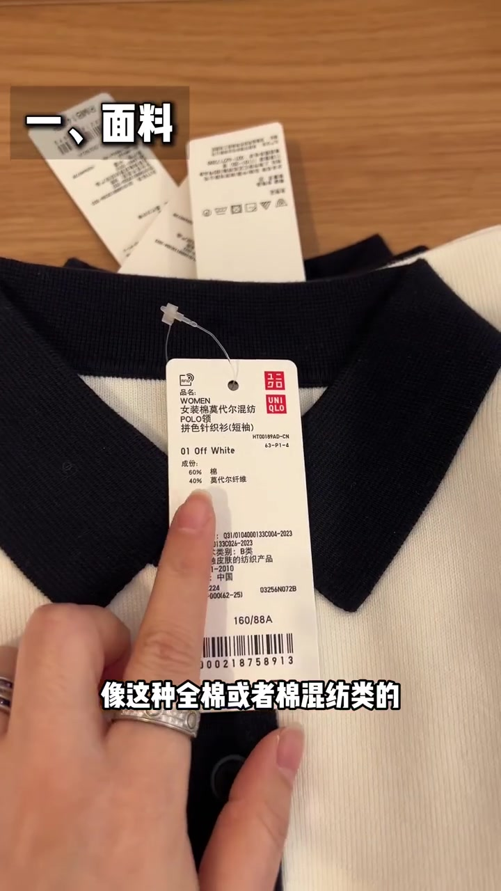
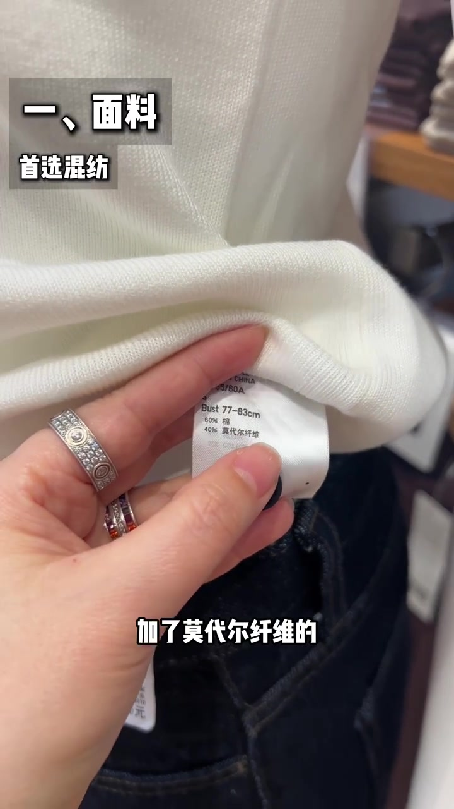
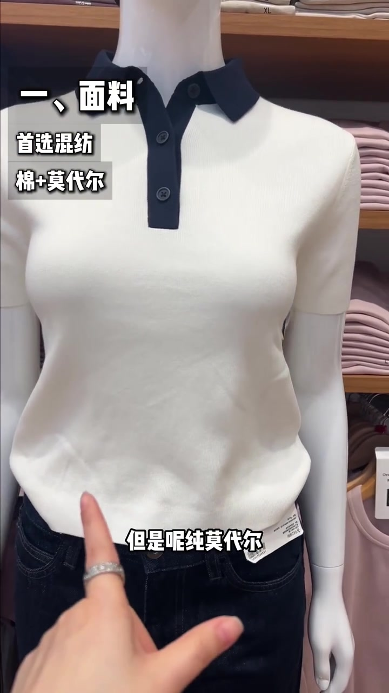
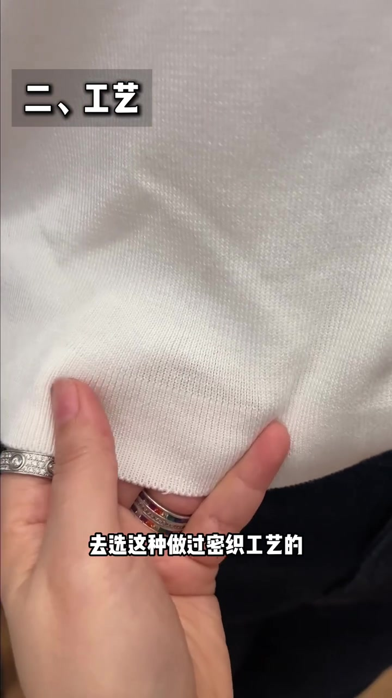
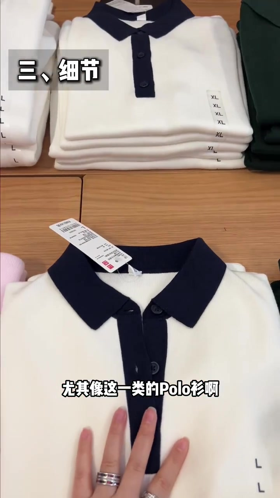
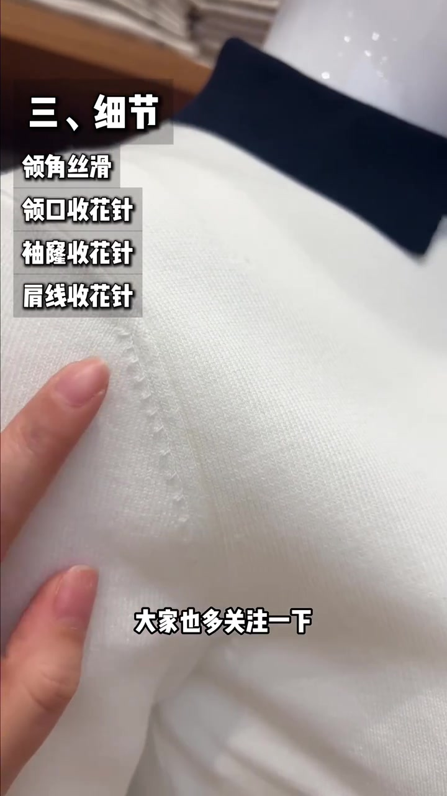
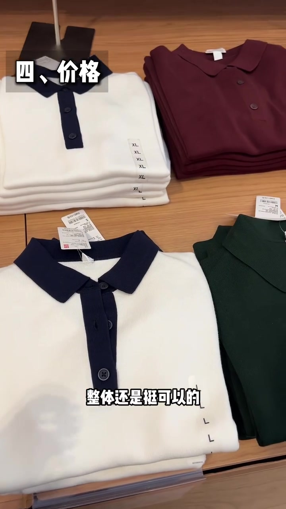

开场：四个点锁定“便宜还显贵”
视频开场直接叠出黄框标题“便宜还显贵的针织衫”，中间大字“4 个点”，下方四个标签依次是价格、细节、工艺、面料。背景是优衣库木色货架上的拼色 Polo 针织衫堆叠，海报写着 cotton modal blend polo sweater。
说明：Whisper 固定按中文识别时，把“针织衫 / 混纺 / 莫代尔 / 吸湿排汗 / 纯莫代尔 / 密织 / Polo 衫 / 收针减针 / 丝滑过渡 / 优衣库”等误识为音近字或英文音译；下文叙事以可见字幕、吊牌与画面标注为准，文末转录区仍完整保留全部原始分段。
面料：首选棉混纺，而不是纯棉或纯莫代尔
老规矩先说面料。讲述者指着货架上的 Polo 针织衫吊牌，字幕写出“像这种全棉或者棉混纺类的”，但立刻收窄建议：首选混纺。吊牌文字清晰可见——女装棉莫代尔混纺 POLO 领拼色针织衫（短袖），成份 60% 棉、40% 莫代尔纤维。
可见字幕：“像这种全棉或者棉混纺类的……但是建议大家首选这种混纺类的。”

她先肯定全棉“贴身穿安全舒适”，随即指出短板：排汗差一点，还容易缩水退色。镜头切到内里成分标：60% 棉、40% 莫代尔纤维。字幕强调“加了莫代尔纤维的”——莫代尔的优点被说成吸湿排汗好，所以中高端睡衣也爱用。

但她马上补边界：纯莫代尔去做针织衫，板型会太垂太软、没形。模特台上的白衣黑领 Polo 衫被手指点中，清单叠出“首选混纺 / 棉+莫代尔”。正确做法是跟棉混纺“中和一下”——互补：保留棉的舒适、保住一定板型，又拿到莫代尔的排汗，还能缓解棉容易皱、发白退色的问题。她把这种混纺总结为“1+1>2”。
可见字幕校正：“但是呢纯莫代尔去做这种针织衫的话，板型会太垂太软没形……跟这种棉混纺中和一下……正好互补。”

工艺：边缘密织，防变形保回弹
为了防止变形，所有边缘位置都要检查，尤其袖口和下摆。画面切到“二、工艺”，字幕写“去选这种做过密织工艺的”。她捏住下摆边缘，指出大概三四公分的密织带——仔细看还是能看到——这种结构能保证更好的回弹性，避免变形。
可见字幕：“去选这种做过密织工艺的……大概三四公分的样子……就能保证更好的回弹性，避免变形。”

细节：Polo 领角丝滑，收花针贴合曲线
想要显贵有质感，工艺细节是关键——尤其 Polo 衫。货架上的拼色 Polo 被推到前景，价签写着 RMB 149 元，产品名再次确认是棉莫代尔混纺 POLO 领拼色针织衫。字幕校正为“尤其像这一类的 Polo 衫”。

她捏住领角说：别看细节小，格外考验技术。但凡中高端 Polo，领角都用收针减针工艺，做成丝滑过渡，提升整体精致度。接着清单叠出四项：领角丝滑、领口收花针、袖窿收花针、肩线收花针——这些才是好针织衫的基础，目的是更好贴合人体曲线。
可见字幕校正：“都是用的这种收针减针的工艺，去达到这种丝滑过渡……像有这些收花针工艺，才是一件好针织衫的基础。”

很多人觉得穿 Polo 衫老气，她归因于这些小细节不到位。显贵质感，就来自“看上去好像没什么，但很精致”的小细节。
价格：优衣库 149，颜色够搭
重点来了——大家最关心的价格。字幕说优衣库这款 149；结合前面价签画面，RMB 149 元被钉死。讲述者评价整体面料与做工工艺“挺可以”，而且这次颜色比较丰富，可以搭配不同风格，最后抛出“大家觉得怎么样，值吗”。
可见字幕校正：“优衣库的这款价格是 149……整体还是挺可以的……颜色也比较丰富，可以搭配不同的风格。”

这一趟货架课讲完了什么
从混纺吊牌到密织下摆，再到 Polo 领角与收花针，最后落到 149 元价签——视频没有讲“哪件最贵”，而是给了一份店内可翻、可摸、可对照的便宜显贵筛查顺序。